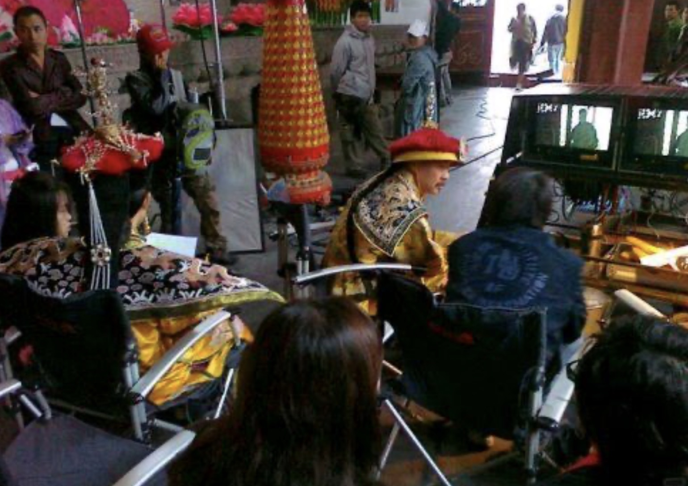
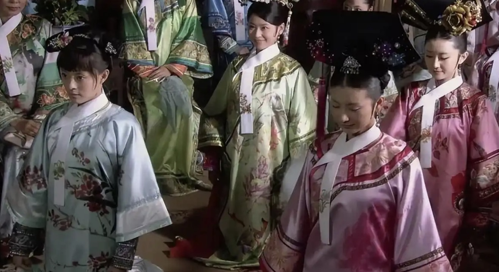
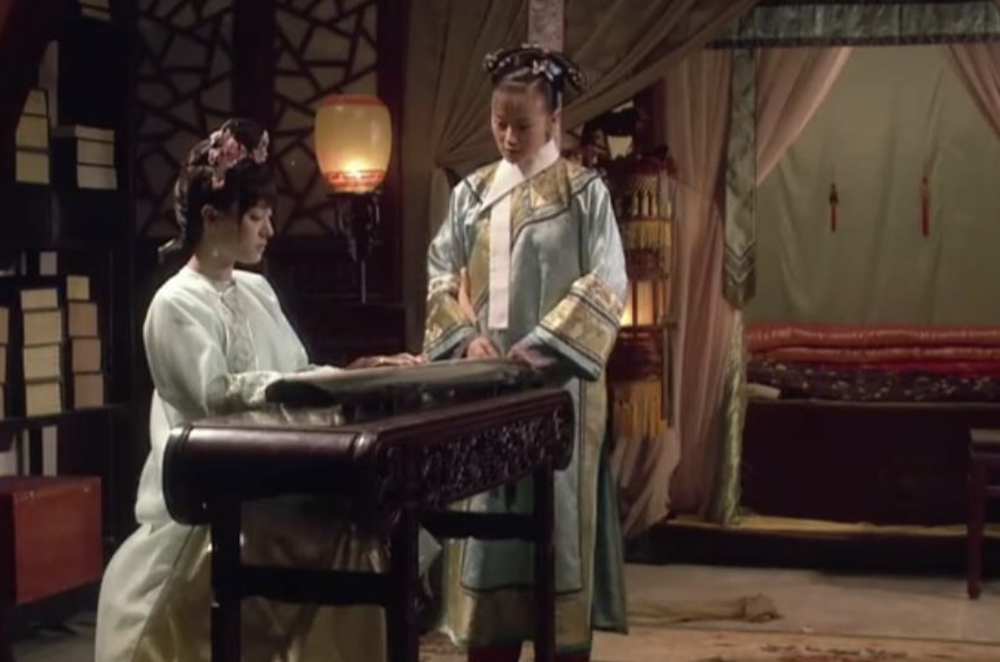

作者流潋紫（吴雪岚）2006年受港剧《金枝欲孽》启发，认为其虽展现后宫残酷，却忽略了女性细腻心理。她试图打破历史上女性"极善或极恶"的扁平形象，还原深宫女子在封建压迫下的真实挣扎。小说最初以"流潋紫"为笔名在晋江文学城连载，因情节曲折、文风古典，点击量迅速突破300万，成为现象级网文。原计划20万字的篇幅因读者呼声延长至7部，历时近10个月完成。2007年，小说获第二届腾讯网"作家杯"原创文学大赛冠军，奠定其文学价值。
创作背景
揭秘《甄嬛传》的创作历程
剧本改编
导演郑晓龙的妻子、编剧王小平看到小说后向其推荐了该作品，郑晓龙又将该作品推荐给了后任电视剧总制片人的曹平，并于2007年购入小说的六年改编权，2008年开始对小说进行改编。导演郑晓龙认为原著架空设定"大周王朝"缺乏批判力度，与编剧王小平合作，将故事背景改为清朝雍正时期。选择雍正时期作为剧情朝代，能够在电视剧中保留小说原文中出现的贯穿整个历史时期、最晚到清朝的诗词歌赋；甄嬛传中压抑森严的后宫氛围能与剧情发生年代的历史氛围与相吻合；雍正作为一个有作为的皇帝也可以更好地体现电视剧的批判性。此外也有雍正年代与现实较为接近，观众比较熟悉的考虑。这一改动使剧情与《红楼梦》半文半白的台词风格兼容，并借雍正勤政形象强化封建制度的腐朽性。
拍摄历程
2010年9月18日《甄嬛传》在北京戒台寺开机，2011年1月30日杀青，共142天。后期制作耗时10个月，2011年10月完成。

《甄嬛传》开拍前，剧组充分考虑了时间跨度、季节和皇宫内景与外景等因素，把拍摄分成了三个阶段：第一个阶段，从开机到10月初，拍完皇宫外的春、夏、秋季的戏（特别是剧本中甘露寺和圆明园的外景戏），甘露寺的拍摄地点剧组选择的场景是佛门圣地戒台寺，圆明园所有的戏则挑选在北京大观园；第二个阶段，在浙江横店拍摄所有皇宫内的戏；第三个阶段，回到北京拍摄甘露寺冬天的外景戏和皇家冬季四大娱乐游戏之一---冰嬉，然后关机。
郑晓龙导演对细节的要求非常高,在开机拍摄前两周，专门请礼仪指导中戏教授张晓龙（戏中温实初的扮演者）对饰演嫔妃、宫女、太监的演员们进行培训，那段时间很是好玩，嫔妃们都把花盆底鞋带回家练习走路、下跪，大家见面有的行半跪礼，有的举手行"招财猫"礼，有的是握手礼，张晓龙不断的去纠正、讲解，到了开机时，所有演员已对自己饰演的角色该有的礼仪举止都了然于胸了。

在拍摄过程中，郑晓龙导演对全组各部门讲过一句话叫"宁可藏拙"，遇到不确定的东西，宁可不在镜头里表现，但镜头里呈现的所有东西都要是准确的而且是考证过的。拍冬天的室内戏，现场道具每天的第一件事就是烧炭，要保证观众能看见炭盆里真正燃烧的炭，我们用的是最好的无烟精炭，前前后后用了60多箱。拍夏天的戏，在皇帝、太后、华妃的宫中，观众都能看到有个大缸，里面都是大冰块，清朝那时的夏天都靠这个降温。在这些细节方面的处理上既反映了当时的宫廷习俗，又能很好的带演员入戏。在服装造型上，剧组也下了不少功夫。头饰工艺繁复，华妃的点翠头冠需手工剪贴翠鸟羽毛，单件饰品制作耗时7天，总造价超百万。
剧中有很多展示舞蹈、音乐、昆曲、书法、滑冰的戏，这些戏全部都配置了专业人士在现场指导，唯一有一场戏是甄嬛弹古琴，其实弹古琴的戏已经拍过好几次了，以往都是古琴指导老师摆琴，现场教指法，那天因为横店的古琴老师有事来不了现场，大家都没留意古琴的头尾位置放颠倒了，到了后期剪辑才发现了这个问题，但要补拍已是不可能了，导演本想删掉拉倒，可剧情接着戏的，我们的剪辑师给导演开玩笑说"导演，看看有没有观众眼尖，能发现这个，给观众留点对咱们吐槽的机会嘛"，导演稍稍释怀。
